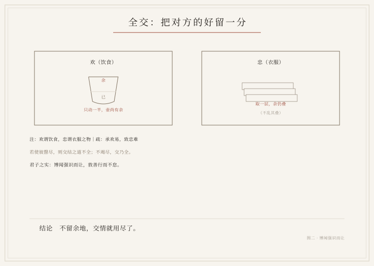

曲礼上 · 一·九十八 · 第 96 课
见闻广、记得牢，而仍能让；厚于善行，而不懈怠——这才叫君子。君子不尽人之欢，不竭人之忠，以全交也。
说什么事：博闻强识而让，敦善行而不怠，谓之君子；君子不尽人之欢，不竭人之忠，以全交也。
落在哪一层：礼意。前两句讲君子之实，后两句讲交友之度。
为何编在此位：上节言君命之敬，此节言君子之德与交之道。由仪入德。
【经】博聞強識而讓，敦善行而不怠，謂之君子。君子不盡人之歡，不竭人之忠，以全交也。
【注】敦，厚。歡謂飲食，忠謂衣服之物。
博闻强识 识，记也。闻见广，记诵牢。
而让 「而」字最重：有而能让，才是君子。有而不让，只是博闻强识之人。
敦善行 注「敦，厚」。敦厚于善行。
不怠 怠，懈也。久而不倦，比一时奋发难。
欢 注「欢谓饮食」。疏「饮食是会乐之具，承欢为易」。
忠 注「忠谓衣服之物」。疏「衣服比饮食为难，必关忠诚筹度，故名忠」。
不尽、不竭 疏「不宜事事悉受。若使彼罄尽，则交结之道不全；若不竭尽，交乃全也」。
见闻广博、记诵强固而仍能谦让，敦厚于善行而不懈怠，这才叫君子。君子不使人尽其欢，不使人竭其忠，以此保全交情。
一节两层。前层说君子是什么样的人：有学问而不矜，有善行而不倦。后层说君子怎样待人：不把对方的好用尽。「全交」二字是落点——交情要留余。
第一层 有而能让 博闻强识是长处，让是把自己的长处收住。长处不收，便成人际的重压。
第二层 久而不怠 善行一时可为，久则难。敦是厚，厚在不间断。
第三层 欢与忠 欢是饮食燕乐，忠是衣服馈赠。疏说承欢易、致忠难——能让人尽欢不难，难在让人竭忠。
第四层 全交 不尽不竭，是为交情留余地。把一个人用到极处，交情就断了。礼在此处算的是长久。
与今日何干 朋友请你吃饭，别每次都点最贵的；朋友帮你办事，别每次都办到底。留一点，关系才长。
| 左 | 右 |
|---|---|
| 博闻强识 | 闻见广，记诵牢 |
| 而让 | 有而不矜，是其为君子处 |
| 敦善行 | 厚于善，久而不倦 |
| 不尽人之欢 | 不使人尽饮食之欢 |
| 不竭人之忠 | 不使人竭衣服馈赠之忠 |
| 以全交 | 留余地，交乃得全 |
画两席对坐之器：一席上杯盘只动一半、酒壶尚有余；另一席上包裹已解、衣帛只取一层，余者仍叠整齐。两席之间地面留出一道空处，不摆任何器物。不画人、不写文字。赭色只在酒壶一道弦纹。
